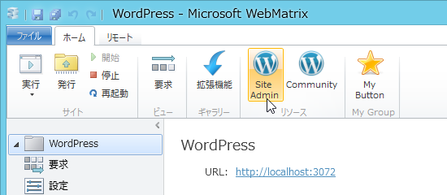
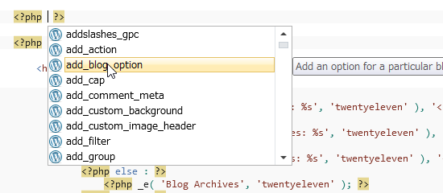
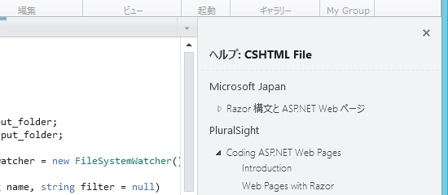
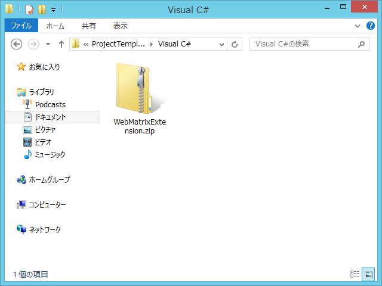
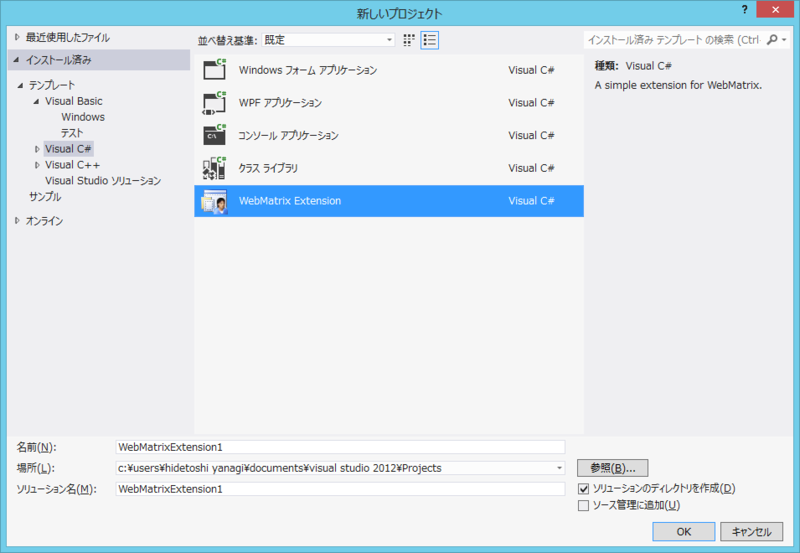
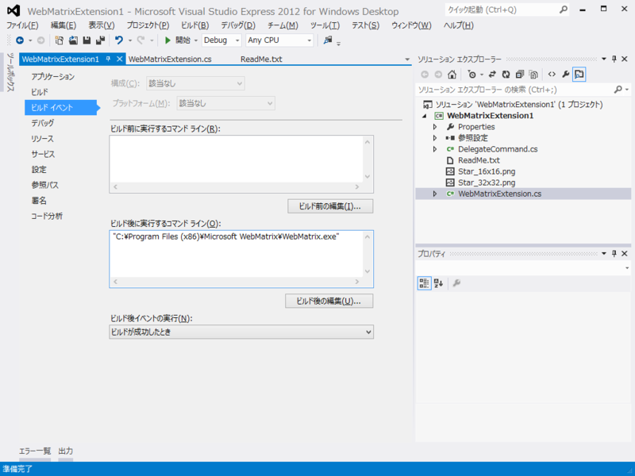
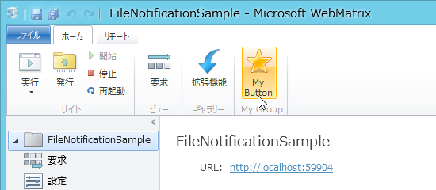

WebMatrixの拡張機能を作るぜー
公開日：
だるさんより先に WebMatrix の拡張機能を作るか
いや、それはそれでだいぶうれしいのだけど、「WebMatrixの拡張機能を作るぜー」をブログネタにしようと思ってたのに、書くことがなくなってしまう！
というわけで、準備編だけでも書いて唾をつけておこうかなーと思っていたのだけど。
- WebMatrix 2 の拡張機能を作成する (1) - はじめに - しばやん雑記
- WebMatrix 2 の拡張機能を作成する (2) - IExtension と MEF - しばやん雑記
- WebMatrix 2 の拡張機能を作成する (3) - 通知・ダイアログ - しばやん雑記
- WebMatrix 2 の拡張機能を作成する (4) - リボン UI - しばやん雑記
もう書いてあるやん。そういえば昔に読んだ気がするわ（爆
次回はダッシュボードの拡張について説明したいと思います。お疲れ様でした。
から300日以上経っているのは気にしない。
WebMatrix Gallery
@shibayan の記事から変わった点と言えば、WebMatrix Gallery という素敵なサイトができたことぐらいかな。WebMatrix Gallery に開発に必要なドキュメントがまとめられているので、目を通すとよいでしょう。それだけではなんなので、そのなかからいくつかつまんでみたいと思います。
拡張機能でできること
Available extensibility points:
WebMatrix Gallery
- Look up the site's local path, URL, and application identifier
- Look up the currently active workspace (Site, Files, Databases, or Reports)
- Add items to the Site workspace dashboard
- Add groups and buttons to the ribbon
- Add a dialog box
- Add a shortcut menu for when a user right-clicks a file in the Files workspace
- Add status information to the notification bar
- In the editor, get and modify selected text in the active open file
- In the editor, get the location of the insertion point and insert text in the active open file
まぁ、いろいろできるみたいですな。
拡張機能のタイプ
WebMatrix Gallery
- Task-based extensibility refers to the ability of third party web applications to embed a file within the install package to customize the WebMatrix user interface for that particular application. By providing some simple XML, applications in the Web App Gallery can add custom links to the Ribbon or dashboard, protect core application files, provide enhanced Intellisense for PHP, and more.
- Help extensibility makes it possible to integrate custom content with WebMatrix's new, context-sensitive help pane. The new help system shows links to relevant content and videos based on where the user is in the application and what they are doing. Help content is drawn from a variety of sources; content providers can create custom feeds to cover new topics or provide more context on existing ones. This article explains how to create custom help content.
- WebMatrix Extensions. For developers, the real power lies in the ability to write extensions that run inside WebMatrix because they're capable of far richer customization. WebMatrix extensions can be written in any .NET language, are loaded by MEF, the Managed Extensibility Framework, and installed/uninstalled (behind the scenes) as NuGet packages (with a slight twist I'll explain in a different post). Similar to Visual Studio, WebMatrix has an extension gallery that allows users to browse and install extensions from a central feed - or create and share custom feeds!
拡張機能には大きく分けて、Task-based extensibility、Help extensibility、WebMatrix Extensions の 3 つ。
Task-based extensibility

アプリケーションギャラリーからインストールするオープンソースの Web アプリケーションに固有の機能拡張。たとえば「WordPress」の場合、管理画面へアクセスするためのボタンや IntelliSense のサポートなどが含まれます。やったことはないけど、XML ファイルだけで結構簡単に実現できるみたい。
Help extensibility

WebMatrix のヘルプ機能を拡充します。「WebMatrix 2」では、ファイルタイプに応じたコンテンツをヘルプペインに表示できます。
WebMatrix Extensions
MEF（Managed Extensibility Framework）で「WebMatrix 2」を拡張できます。「WebMatrix拡張機能」と言えば、これのことだと思って問題ないと思う。
WebMatrix Extensions の開発
「WebMatrix拡張機能」は、WebMatrix Extension Kit （http://webmatrix2.blob.core.windows.net/webmatrix2/WebMatrix2ExtensionKit.zip）を利用して比較的簡単に開発できます。さっき言ったみたいに MEF ベースなので、その知識があれば少し楽になるけれど、まぁ、なくてもなんとなくわかるんじゃないかな。
テンプレートのインストール

WebMatrix Extension Kit に入っている WebMatrixExtension.zip を Visual Studio 2012\Templates\ProjectTemplates\Visual C# へコピー。

すると、［テンプレート］‐［Visual C#］に「WebMatrix Extension」というテンプレートが現れる。
ビルド＆実行

そのままビルドして「WebMatrix 2」を起動（Visual Studio 2012 Express Edition で動作確認）。ビルドイベントに登録しておくといいみたい。なんか ReadMe に書いてあったけど無視した。

リボンに「My Button」が追加されているのがわかる。あとはソースコード読むなり、@shibayan の記事を読むなりして頑張ってください。